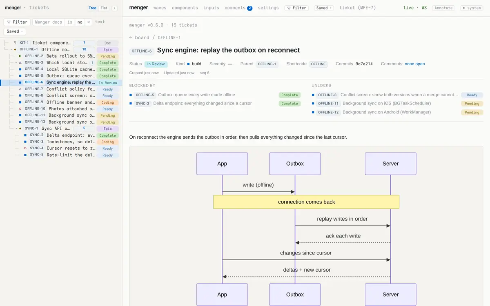
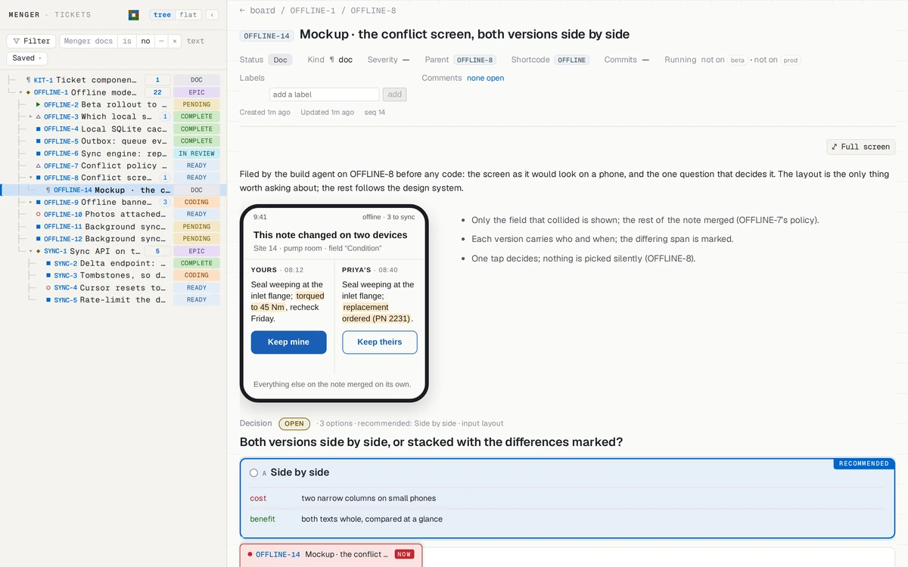
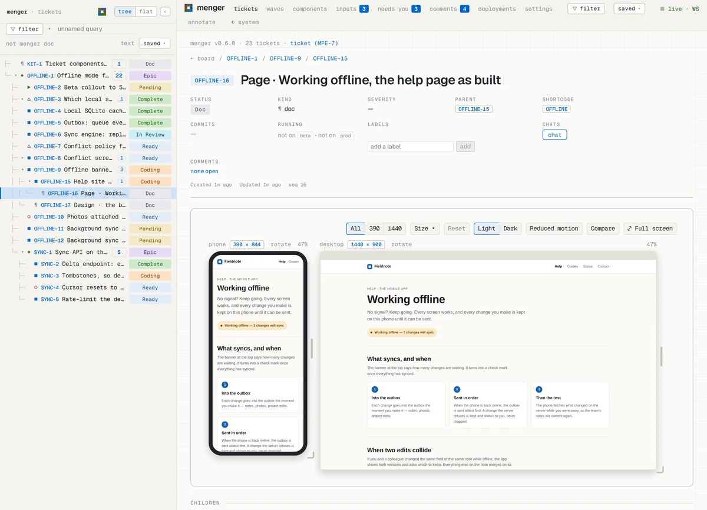
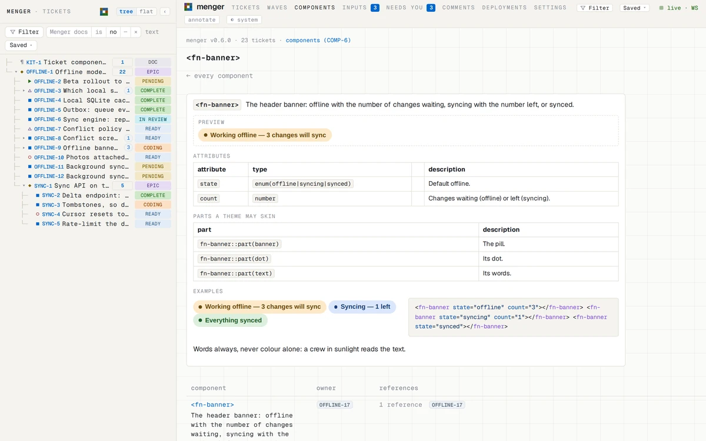
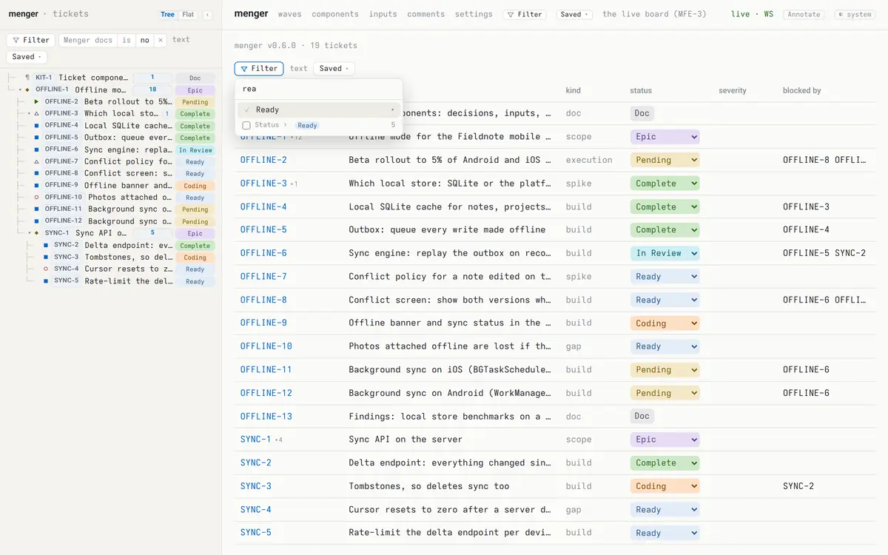
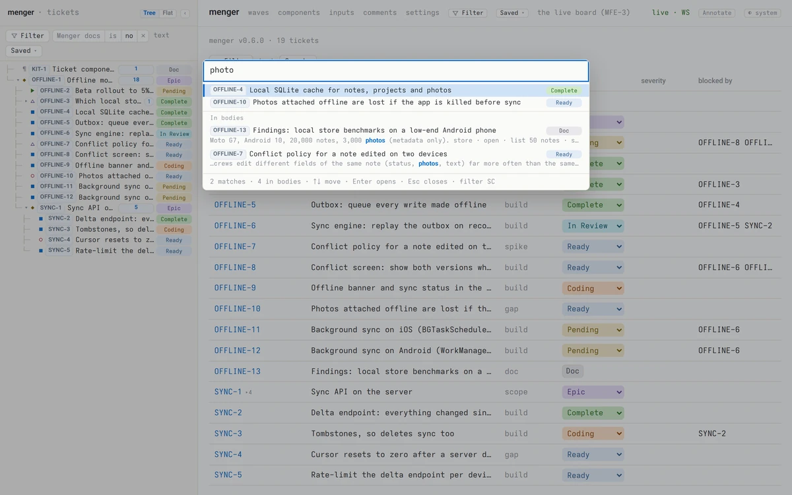
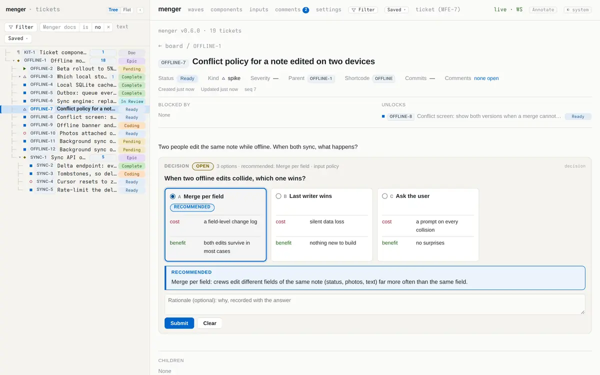
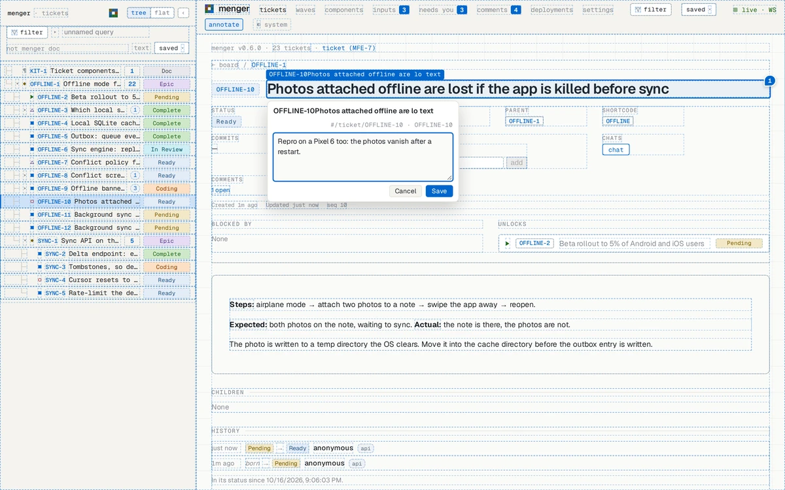
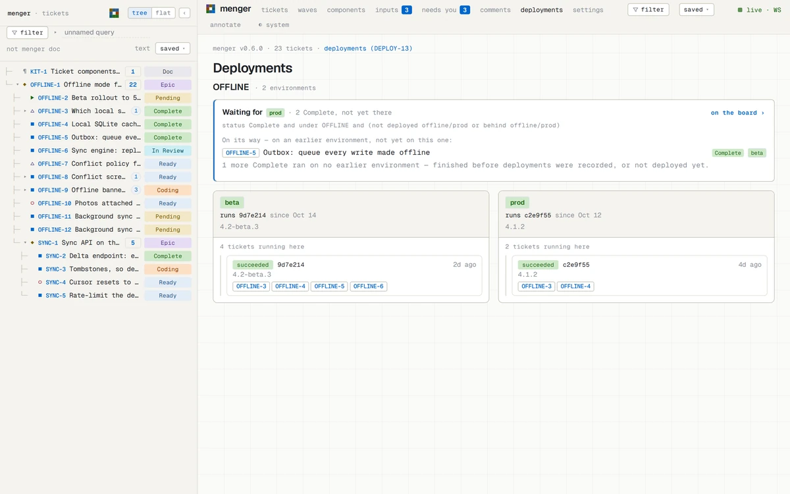

The guide
How to use menger
Everything the front page shows, in the order you meet it. Ten parts; each stands on its own.
What it is
menger tracks a plan as a tree of tickets. People write it; people and
agents carry it out. Every ticket lives in a shortcode:
OFFLINE-6 is the sixth ticket of OFFLINE. A
shortcode starts with a root — a scope, or a doc — and shortcodes nest
under one another, so all of a team's work is one tree.
Every ticket has a kind:
- scope breaks into children: a branch of the plan.
- build makes something that did not exist.
- execution carries out a procedure, like a rollout.
- gap a defect in what shipped.
- spike answers a question.
- doc not work: a finding, a manifest, a reference. It has no lifecycle.
A ticket's outputs are tickets. A spike's answer, a report or a checkpoint is filed as a child of the ticket that produced it, so the tree shows where every result came from. Bodies are markdown and may hold diagrams, HTML and live components.
The board and a ticket
The app opens on the board: every ticket you can read, one line each, beside the nav — the tree of shortcodes, each with its done/total. Open a ticket for its page: status, kind, parent, blockers, body, children and the commits that finished it. A change made anywhere appears on your screen as it happens.

The lifecycle
- PendingWritten down, not yet approved. Work does not start; a person promotes it.
- ReadyApproved. It can start once everything it waits on is done.
- CodingSomeone has started. Set the moment work begins, so nothing is claimed twice.
- In ReviewFinished and committed; waiting to be merged.
- CompleteMerged. Done.
Beside the line: Superseded replaced by another ticket · Canceled will not be done · Blocked a marker · Idea parked · Epic a scope's status · Doc a doc's only status.
What waits on what
A ticket names the tickets it is blocked by. A blocker
is satisfied when it is Complete, Superseded or Canceled. The
ready set is every Ready ticket whose blockers are all
satisfied: what can start now. The wave board
(#/waves/<SHORTCODE>) lays a shortcode's work out in
order — wave 1 can start now, wave 2 once wave 1 lands — and moves the
cards as the work moves.
Inside a ticket: mockups, diagrams, pages
A body is markdown, and may hold more: a ```mermaid
diagram, drawn in place; HTML with its own styles and scripts; and the
house components, a decision among them. A body with markup renders in
a frame of its own, sandboxed from the app, so what an agent puts there
is the thing itself — a screen to look at, a site to click through, a
plan drawn as a graph — not a picture of it, and it sits beside the
question it raises.

A whole HTML document is shown as itself. One that declares
view: mockup in its frontmatter — or
<meta name="menger-view" content="mockup"> in its
head — is drawn in device frames at each of its widths
(390, 1440, say), side by side at one scale, each a viewport
of its own; the bar above them picks one device or all, light or dark,
and reduced motion, and the page sees each as its own media query.
z fills the screen with it.

Your own components. A
```component fn-banner block in any ticket defines a custom
element: its <template>, <style>,
<docs> — a summary, its attributes, the parts a theme
may skin, examples — and <script>. The registry keeps
it, so any body may write <fn-banner state="syncing"
count="1">; Components in the header lists every one
with its owner and what references it, and
#/components/fn-banner is its help page, the examples live.
The house components — decisions, inputs, steps, results — are defined
the same way, in a ticket.

Such a body is filed as a doc under the
work it belongs to — a mockup under the build it is for, a page under
the build that asks about it, a site map beside the decision it informs
— so the tree says where it came from. The frame talks to nothing but
menger: a body's script may read and write tickets through
window.menger, and nothing else.
Finding things
Filters reach every view. The header's Filter button (F) filters everything; each view — board, wave board, nav, inputs — has its own (f). Pick categories from the menu, or type the filter language:

ready and kind buildbuilds that can startstatus in (Pending, Ready)not startedcategory in (active, review)in flightnot category doneeverything openunder OFFLINE-6a ticket and everything below itready and kind build and in SYNCcombined
A filter rides the page's address, so a link brings it back; Saved ▾ keeps one under a name for everyone. Right-click any tag — a shortcode, a status, a kind — to filter by it.
Search looks inside titles and bodies: every word required, prefixes and typos forgiven, best match first. The palette (/ or Ctrl+K, ⌘K on a Mac) jumps to a ticket by id or title and shows matching passages below.

Keys
| / or Ctrl+K | jump to a ticket (⌘K on a Mac) |
|---|---|
| j / ↓ | next row (nav tree, board) |
| k / ↑ | previous row |
| l / → | expand a group, or step into it |
| h / ← | collapse a group, or step out to it |
| Home / End | first / last row |
| Enter | open the focused ticket |
| g h | go to the board |
| f | filter this view |
| F | filter every view |
/ filter SC | the global filter becomes a shortcode's tree |
| a | annotation mode: click anything to comment on it |
| Shift+F10 | the focused ticket's menu |
| ? | the list of keys |
| Esc | close the palette or the list; leave annotation mode |
Inputs: questions asked inside a ticket
A ticket can ask its owner something and keep the answer: a decision (pick one), a multi (tick any) or a text reply. You answer on the ticket's own page; every answer is kept with its history. Agents ask; the owner answers.

Whoever asked acts on the answer, then closes the input, which freezes
it: DECIDED. #/inputs lists everything waiting on
you across every ticket; once you have opened it, the header counts what
is still open.
The queue: a question put in front of you
An input waits under Needs you until you look. When it should
not wait — an agent idle until it is answered, a deploy that rolled back
— the agent queues the ticket, with an urgency
(whenever, today, now,
blocking) and a reason. Every open app shows it at once as a
tab along the bottom edge of the main column; now and
blocking are red, taller, and nudge until opened. A tab that
arrives while you look flashes in its colour.
Click the tab: the urgency, who queued it and why, and the question with its options, answerable right there — or open the ticket, snooze 10m, done with it. Answering takes the ticket out of the queue; the input stays the agent's to close. A ticket is queued once: queued again, its urgency rises, never falls.
synapse -P 4455 menger tickets queue --id OFFLINE-14 --urgency now --input layout \
--reason 'OFFLINE-8 is idle until the layout is picked'
synapse -P 4455 menger tickets queued # most urgent first, then oldest
synapse -P 4455 menger tickets snooze --id OFFLINE-14 --minutes 30
synapse -P 4455 menger tickets list --filter 'queued now or queued blocking' --summary trueComments and notes
Comments are a reader's notes on the app itself. Press
a (or Annotate in the header): every element is
outlined — inside ticket bodies too — and a click opens a comment box
right there. Numbered pins mark what has open comments, each with
Resolve. #/comments lists them all, each linking back
to its spot; a ticket's page counts its open ones.

Notes are thoughts written down before they are tickets: dated, untitled, on no shortcode. When one is ready, upgrade it and it becomes a ticket, its text the body.
Deployments: where the work runs
Your CI records each deploy with one call — the project, the
environment, its state, the revision and the commits it carries — and
menger works out which tickets those commits finished. A ticket's page
says where it runs; a board row carries a mark per environment;
#/deployments shows each environment, every deploy and what
it carried, and the Complete work still waiting for the last one. A
rollback takes out what only the undone deploys carried. A deployment
never moves a status.

synapse -P 4455 menger deployments record --project OFFLINE --environment prod --state succeeded \
--revision c2e9f55 --commits 3f9c2a1,8b41d07,c2e9f55 --release 4.1.2
synapse -P 4455 menger deployments for_ticket --id OFFLINE-5
synapse -P 4455 menger tickets list --filter 'category done and not deployed prod' --summary truedeployed prod and not deployed prod
are filter cells, so a board, a wave board or a saved filter can show
what reached an environment and what did not.
From the command line
Everything menger does is a Plexus RPC method — there is no side door,
so the app, scripts and agents make the same calls.
synapse is the CLI
for any Plexus backend. Point it at your server's WebSocket port (4455 by
default). Parameters are flags; <method> --help lists
them.
synapse -P 4455 menger tickets health
synapse -P 4455 menger tickets list --filter 'blocked' --summary true --limit 20
synapse -P 4455 menger tickets ready_set --filter 'kind build' --summary true
synapse -P 4455 menger tickets search --query 'outbox replay'
synapse -P 4455 menger tickets get --id OFFLINE-6
synapse -P 4455 menger tickets watch # every change, livesynapse -P 4455 menger tickets create --epic HOME --kind scope --title 'Home'
synapse -P 4455 menger tickets create --epic HOME --title 'Fix the gate' --kind build
synapse -P 4455 menger tickets set_status --id HOME-2 --status Ready
synapse -P 4455 menger tickets link_commits --id HOME-2 --commits 77df9a0synapse -P 4455 menger tickets inputs --state open
synapse -P 4455 menger tickets answer --ticket OFFLINE-7 --input policy \
--value.type choice --value.option merge --rationale 'crews edit different fields'
synapse -P 4455 menger comments list --state open
synapse -P 4455 menger notes add --body 'the palette should remember its last query'
synapse -P 4455 menger notes upgrade --id 1 --epic HOMEThe first ticket of a shortcode must be a scope or a doc.
Global options (-P, -j for JSON) go before
menger.
Run your own
menger is one binary and a SQLite file as its system of record.
--features embedded-app builds the web app into that binary,
so the one file serves the app, the WebSocket and REST with nothing
beside it. With Rust installed:
cargo install menger --features embedded-app
menger --db-path ~/menger/tickets.db
# the app http://127.0.0.1:4456/
# WebSocket ws://127.0.0.1:4455 (synapse -P 4455 …)
# REST + SSE http://127.0.0.1:4457 (--no-rest turns it off)Other ports: --port (WebSocket), --shell-port
(the app), --rest-port. Open the app in two windows, change a
status in one, and watch the other follow. Everyone who can reach the
ports can use it, so keep them on the machine or behind your own network.
Before a deploy,
menger --verify-derived --db-path … checks the file.